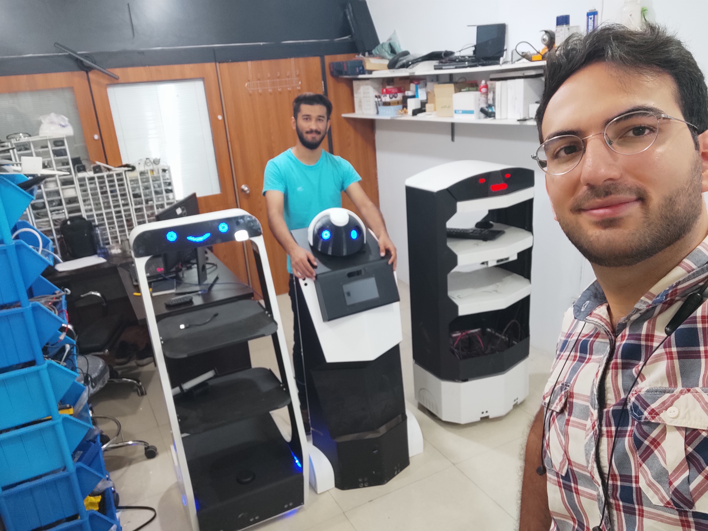

Role Overview
I was hired as a robotics engineer to design and implement the ROS-based architecture for the service robot platform. The goal was to turn early research concepts into a practical autonomous system capable of operating reliably in real-world environments.
Over time, I helped build a focused cross-functional team of four engineers spanning mechanical, electrical, and software disciplines, and led the development of the robot through iterative design, integration, and field validation.